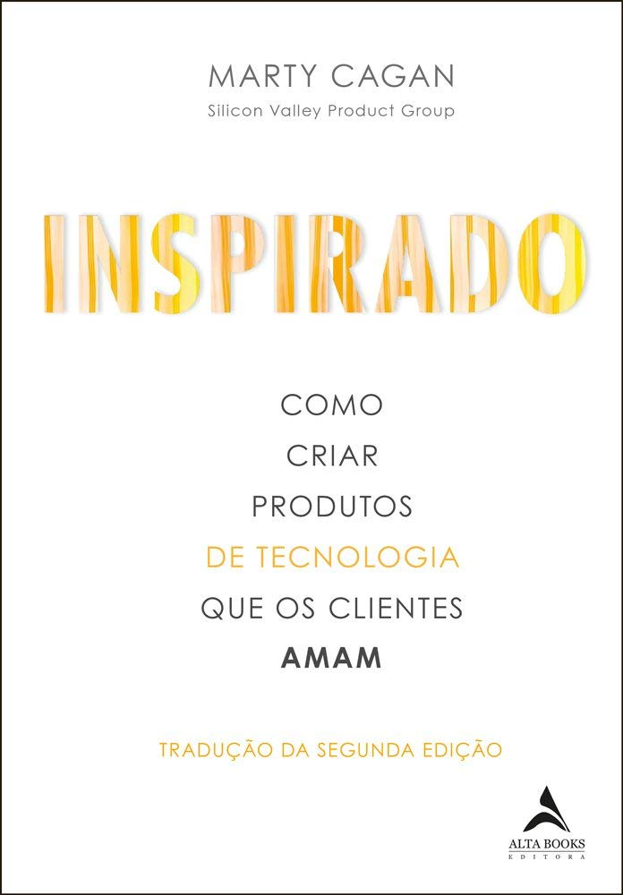
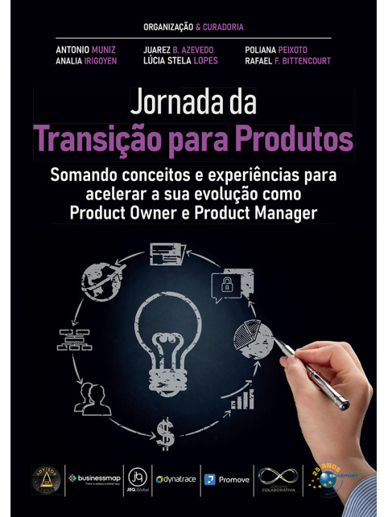
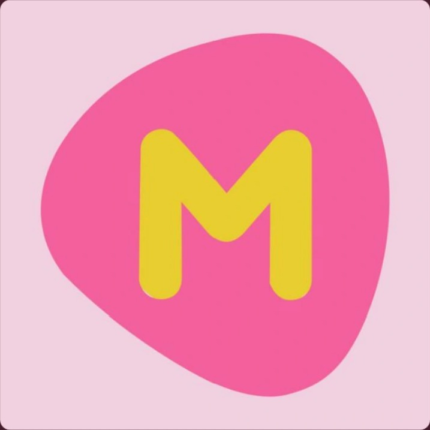
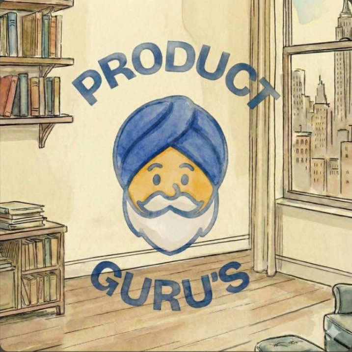

Oiê, sou a Paula. Escrevo aqui sobre produto, carreira e o caos organizado do dia a dia.
Quem escreve →Oiê! Eu Produtei é um espaço onde as conversas sobre Produto ganham a profundidade que não cabe num post. Descobertas, métricas, decisões difíceis, bastidores e a verdade nua e crua da vida de quem constrói Produto. Chega mais e fica à vontade!
Sem enfeite, sem polimento, sem frescura.
Essa coleção está sempre em construção. Ela acompanha o que estou lendo, ouvindo e aprendendo ao longo da jornada em Produto.

Se eu tivesse que indicar apenas um livro para quem quer entender Produto de verdade, seria este. Marty Cagan explica como grandes equipes descobrem, validam e constroem produtos que geram valor para clientes e para o negócio. Uma leitura indispensável para qualquer PM.

Uma leitura prática para quem está entrando no universo de Produto ou quer consolidar seus conhecimentos. O livro reúne diferentes perspectivas de profissionais do mercado e conecta teoria com experiências reais, tornando a transição para Product Manager muito mais clara.

O Mulheres de Produto vai muito além de falar sobre a profissão. Os episódios abordam carreira, liderança, gestão, desenvolvimento profissional e os desafios de construir produtos em diferentes contextos. O que mais gosto é a diversidade de histórias e perspectivas compartilhadas por mulheres que vivem Produto na prática. É um podcast que inspira, ensina e amplia a forma como enxergamos a profissão.

Se você quer aprofundar seus conhecimentos em Produto, esse é um podcast que vale a pena acompanhar. Os episódios exploram temas como Product Discovery, Product Strategy, priorização, métricas, experimentação, liderança, cultura de produto e gestão de times. As conversas são conduzidas por profissionais experientes, que compartilham desafios reais, aprendizados e práticas aplicáveis ao dia a dia de Product Managers, Product Owners e líderes de Produto.
Oiê, sou a Paula. Escrevo aqui sobre produto, carreira e o caos organizado do dia a dia.
Quem escreve →